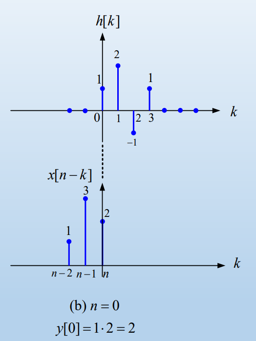

이산 시간 신호와 시스템
이산 시간 신호를 Discrete Time Signal, 줄여서 DT signal이라 표기하고 연속 시간 신호를 Continuous Time Signal을 줄여서 CT signal이라 표기한다.
우리가 평소에 사용하는 컴퓨터와 같이 디지털 기기는 DT 신호를 사용한다.
DT 신호는 기존의 CT 신호를 \(T_s\)간격으로 샘플링 하여 얻은 신호로 이 과정을 수식으로 쓰면 \(f(t) \to f(nT_s) = f(t)|_{t = n T_s}=f[n]\) 이다. 여기서 주의해야 할 점은 n은 정수라는 것이다.
DT 신호에서의 신호 변환(signal transformation)은 CT 신호에서와 거의 비슷하다고 볼 수 있다.
또한 DT 신호 시스템의 성질 또한 CT 신호 시스템과 매우 유사하므로 이를 참고하면 된다. ## DT 주기 신호의 특성
CT periodic signal를 샘플링 한다면 DT periodic signal 또는 DT Aperiodic signal을 얻게 된다.
그러므로 CT periodic signal을 샘플링하였을 때 DT periodic signal을 얻기 위해서는 \(\displaystyle\frac{T_s}{T_0} =\) rational number(유리수, 정수/정수)라는 특정 조건을 지켜줘야 한다. \(\displaystyle\frac{T_s}{T_0}\)는 정규화 주파수\((f_0)\)로 표기할 수 있다.
수식을 통해 간단히 서술하면 아래와 같다.
\(x[n] = Asin(2\pi f_0n),\; x[n + N] = Asin(2\pi f_0(n+N))\)
여기서 \(f_0 N\)이 정수여야 해당 식이 성립하게 된다.
\(\therefore f_0N = m\;(N,m = integer) \to f_0\)는유리수이고 \(\displaystyle f_0 = \frac{T_s}{T_0}\)이다.
Convoution sum
CT에서는 Convoultion을 할 때 적분을 사용했지만 DT에서는 적분이 아닌 \(\sum\)을 사용하면 된다. 직관적으로 설명하면 이산 시간에서는 면적을 구할 수 없기 때문에 적분을 사용할 수 없다. 그러므로 이산 시간에서의 convolution은 아래와 같이 표기할 수 있다.
\[x[n] = x[n]*\delta[n] = \sum_{k=-\infty}^{\infty}x[k]\delta[n-k]\] Impulse response는 아래와 같이 표현할 수 있다.
\[y[n] = x[n]*h[n] = \sum_{k=-\infty}^{\infty}x[k]h[n-k]\]
convolution sum 계산
sequence형태의 \(x[n]\)과 \(h[n]\)이 \(h[n] =\) {\(1,2,-1,1\)}, \(x[n] =\) {\(2, 3, 1\)}일 때, \(y[n]\)을 계산하면 아래와 같다. \[y[n] = \sum_{k=-\infty}^{\infty}x[n-k]h[k]\] k에 따라 값이 어떻게 계산이 되는지를 그래프로 표현하면 다음과 같다.

이와 같은 계산을 수행하면 \(y[n] =\){\(2,7,5,1,2,1\)}이라는 결과가 나온다.
여기서 \(y[n]\)이 유한한 범위에서만 값을 갖고 나머지 범위에서는 값을 갖지 않고 있는데 이를 Finite impulse response(FIR) system이라고 한다. FIR system은 과거의 출력을 사용하지 않는다.
반대로 \(y[n] = a^n u[n]\)과 같이 무한한 범위에서 값을 갖는 시스템을 Infinit impulse response(IIR) system이라고 한다. 추가로 IIR system은 과거의 출력을 사용한다.